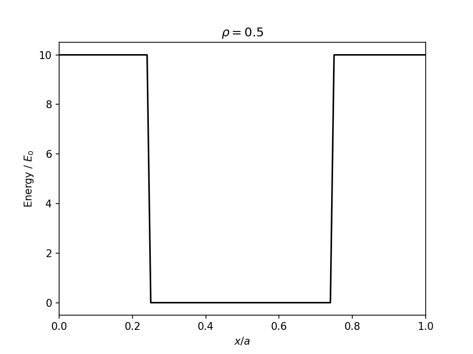
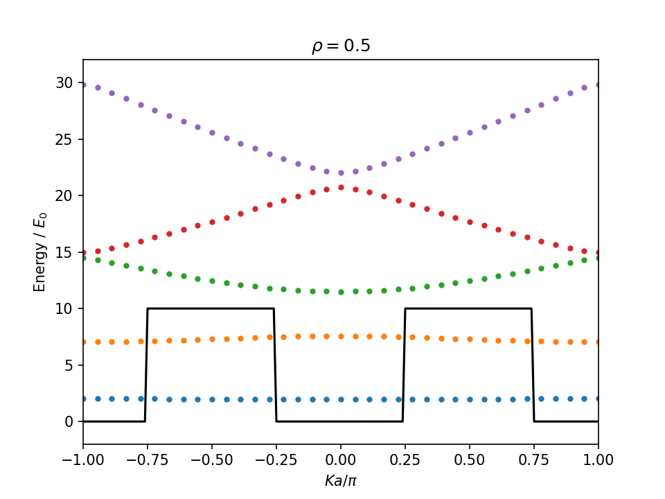

使い方
このパッケージを利用して、分散関係を描画する手順を紹介します。 JuliaのREPLを用いた例です。
最初に、KronigPennyPotential オブジェクトを作成します。
julia> using ExtendedKronigPennyMatrix
julia> v0=10;
julia> rho=0.5 # b/a;
julia> pot=KronigPennyPotential(v0, rho)
KronigPennyPotential(10, 0.5)get_function関数を用いて、ポテンシャル関数を入手します。
ここでは PyPlot パッケージを用いて、プロットします。
julia> using PyPlot
julia> clf()
julia> begin
pf = get_potential(pot)
a = 1
xs=-a:a/100:2a
plot(xs, pf.(xs), "k")
xlim(0,1)
xlabel(L"$x / a$")
ylabel(L"Energy / $E_0$")
title( L"$\rho =$"*string(rho))
end
PyObject Text(0.5, 1.0, '$\\rho =$0.5')
次に、Model オブジェクトを作成します。
julia> Ka=0.0 # wavenumber multiplied by a;
julia> model=Model(pot, Ka)
Model{KronigPennyPotential}(KronigPennyPotential(10, 0.5), 0.0, 60, 121, Alternates(60), [5.0 3.183098861837907 … -0.0 -0.0; 3.183098861837907 9.0 … -0.05395082816674419 0.05218194855471979; … ; -0.0 -0.05395082816674419 … 14405.0 -0.0; -0.0 0.05218194855471979 … -0.0 14405.0])このオブジェクトの hnm フィールドに、ハミルトニアン行列が計算されました。
julia> typeof(model.hnm)
Array{Float64,2}
julia> size(model.hnm)
(121, 121)
julia> model.hnm[1:5,1:5]
5×5 Array{Float64,2}:
5.0 3.1831 3.1831 -0.0 -0.0
3.1831 9.0 -0.0 3.1831 -1.06103
3.1831 -0.0 9.0 -1.06103 3.1831
-0.0 3.1831 -1.06103 21.0 -0.0
-0.0 -1.06103 3.1831 -0.0 21.0Juliaの LinearAlgebra.eigvals メソッドを用いて、エネルギー固有値を計算します。 詳しくは、Juliaドキュメントの LinearAlgebra 標準ライブラリを参照してください。
julia> using LinearAlgebra
julia> evs=eigvals(model.hnm);
julia> evs[1:3]
3-element Array{Float64,1}:
1.96806550580877
7.582164159222716
11.50050875701112波数（と周期aの積）Ka を $[-\pi, \pi]$ の範囲で走査して、分散関係を描きます。
julia> using PyPlot
julia> clf()
julia> begin
a = 1
xs=-a:a/100:2a
plot(xs .- 1/2, pf.(xs), "k") # Holizontally shift to centerize the potential well
cm=get_cmap("tab10")
for Ka in (-18:18)/18*π
model=Model(pot, Ka)
ev = eigvals(model.hnm)
for i in 1:5
plot(Ka/ π, ev[i], ".", color=cm(i-1))
end
end
xlim(-1,1)
ylim(-2,32)
xlabel(L"$Ka / \pi$")
ylabel(L"Energy / $E_0$")
title( L"$\rho =$"*string(rho))
end